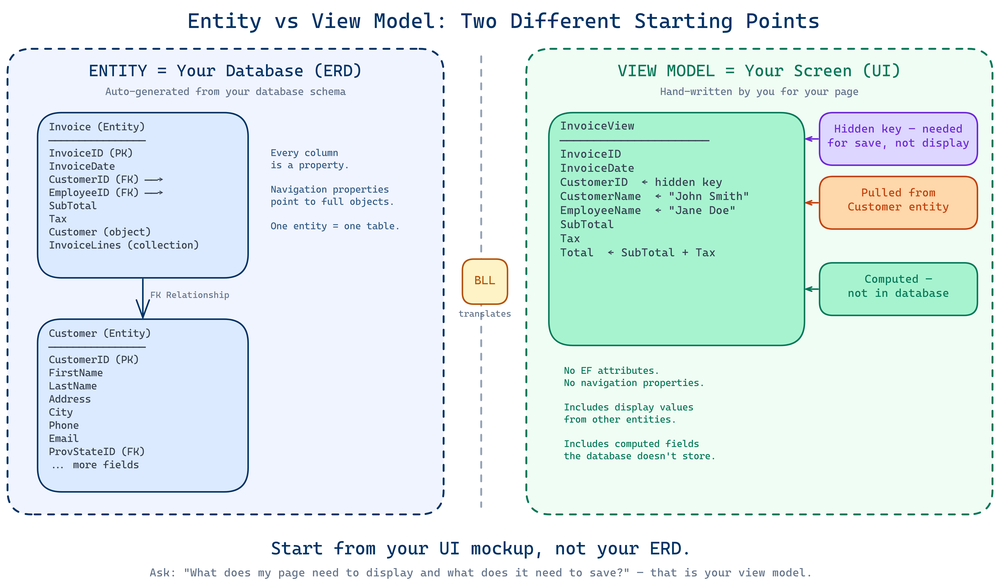
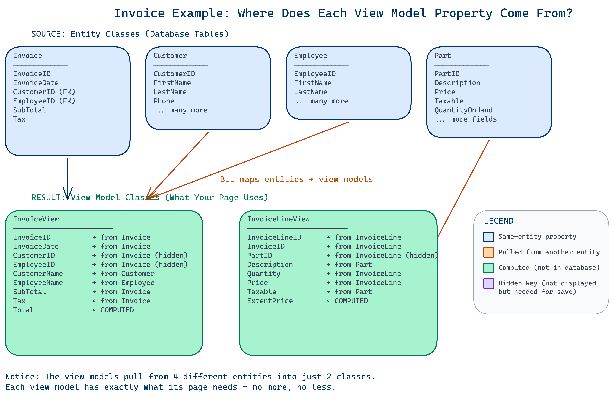
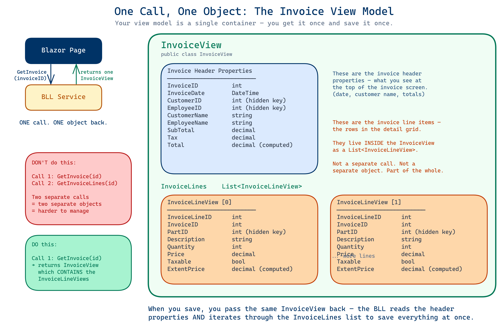
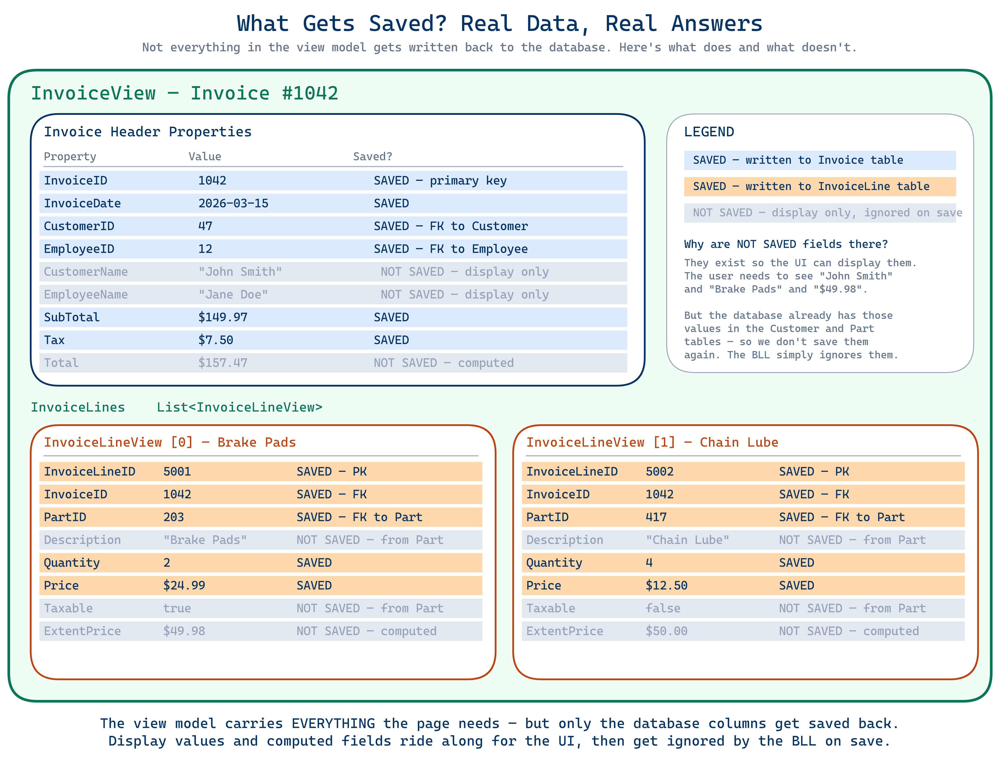

Many students look at the ERD (Entity Relationship Diagram) and try to build their view models to match it exactly. This is a fundamental misunderstanding of what each one is for.
An entity is a C# class that maps directly to a database table. It is auto-generated by EF Core Power Tools from your database schema.
[Table], [Key], [ForeignKey], etc.)ICollection<T> for one-to-many, object references for many-to-one)internal so the UI layer cannot access them directlyThink of entities as a mirror of your ERD in code. Each entity = one table. Each navigation property = one relationship line on the ERD.
A view model is a C# class that represents what the user sees on screen or what a form collects from the user. You design it yourself based on the needs of your page.
public — they are what the UI layer works withThink of a view model as what you would sketch on a whiteboard if someone asked “what data does this page need?”

This is the clearest way to see the difference. Let's look at how invoices work in the HogWild system.
The database has two tables — Invoice and InvoiceLine — connected by a foreign key.
| Invoice Entity | ||
|---|---|---|
| InvoiceID | int | Primary key |
| InvoiceDate | DateTime | |
| CustomerID | int | Foreign key |
| EmployeeID | int | Foreign key |
| SubTotal | decimal | |
| Tax | decimal | |
| Customer | Customer | Navigation property (object) |
| Employee | Employee | Navigation property (object) |
| InvoiceLines | ICollection<InvoiceLine> | Navigation property (collection) |
| InvoiceLine Entity | ||
|---|---|---|
| InvoiceLineID | int | Primary key |
| InvoiceID | int | Foreign key |
| PartID | int | Foreign key |
| Quantity | int | |
| Price | decimal | |
| Invoice | Invoice | Navigation property (object) |
| Part | Part | Navigation property (object) |
Notice the entity stores CustomerID and EmployeeID as integers. It has navigation properties that are full objects pointing to other entities. This is all about how the database stores and connects data.
Now think about what an invoice screen actually needs to display:
| InvoiceView | ||
|---|---|---|
| InvoiceID | int | Identifier |
| InvoiceDate | DateTime | |
| CustomerID | int | For lookups |
| EmployeeID | int | For lookups |
| CustomerName | string | Pulled from Customer entity |
| EmployeeName | string | Pulled from Employee entity |
| SubTotal | decimal | |
| Tax | decimal | |
| Total | decimal | Computed: SubTotal + Tax |
| InvoiceLineView | ||
|---|---|---|
| InvoiceLineID | int | Identifier |
| InvoiceID | int | |
| PartID | int | |
| Description | string | Pulled from Part entity |
| Quantity | int | |
| Price | decimal | |
| Taxable | bool | Pulled from Part entity |
| ExtentPrice | decimal | Computed: Price × Quantity |
Look at the differences:
CustomerName and EmployeeName — The entity stores CustomerID (an integer) and has a navigation property to the full Customer object. The view model just needs the name as a string. The user doesn't need to see the Customer object — they need to see “John Smith.”Total — This field does not exist in the database. It's calculated as SubTotal + Tax. The view model computes it on the fly using an expression body: public decimal Total => SubTotal + Tax;Description and Taxable — These come from the Part entity, not the InvoiceLine entity. The view model pulls in values from multiple tables into one class because that's what the screen needs to show.ExtentPrice — Also computed: public decimal ExtentPrice => Price * Quantity; This value is never stored in the database.Customer, Employee, or Part objects. It has the specific pieces of information it needs from those objects.
Your entity stores a CustomerID because the database only needs a number to find the right row. It also has a navigation property — a full Customer object — so Entity Framework can follow that relationship.
But your user doesn't want to see 47 on their invoice. They want to see “John Smith.”
So in your view model, you skip the object and just hold the value you actually need to display:
| Entity has... | View Model has... |
|---|---|
CustomerID (int) + Customer (object) | CustomerID (int) + CustomerName (string) |
PartID (int) + Part (object) | PartID (int) + Description (string) + Taxable (bool) |
ProvStateID (int) + ProvState (object) | ProvStateID (int) or a display string |
Ask yourself: “What value from this related table does my page actually display?” Put that in your view model — not the whole object.
CustomerID and PartID are still in the view model even though the user sees “John Smith” and a part description — not ID numbers.PartID. But when you save that invoice line, the database needs to know which part this line is for. Without the PartID in your view model, you have no way to link it back.Add fields the database doesn't store but the UI needs to display.
| Computed Property | Formula |
|---|---|
Total | SubTotal + Tax |
ExtentPrice | Price * Quantity |
Outstanding | OrderQuantity - QuantityReceived - QuantityReturned |
GST | SubTotal * 0.05m |
These use expression bodies (=>) so they always recalculate automatically.
A view model can contain a list of other view models to represent a parent-child screen.
This is not an ERD. There is no foreign key relationship between PurchaseOrderView and PurchaseOrderDetailView. It's a container that holds everything the page needs in one place.
GetInvoice(invoiceID) — and gets back one InvoiceView that already contains the invoice lines inside it as a List<InvoiceLineView>. You don't make a separate call to get the lines. When you save, you pass the same InvoiceView back to the BLL — it contains the header properties and the line items, and the BLL saves everything at once.

Not everything in the view model gets written back to the database. The view model carries everything the page needs to display, but only the actual database columns get saved. Display values like CustomerName and computed fields like Total and ExtentPrice are ignored by the BLL on save — the database already has those values in the Customer and Part tables, and computed values are recalculated every time.

| Entity | View Model | |
|---|---|---|
| Represents | A database table | A screen or form |
| Created by | EF Core Power Tools (auto-generated) | You (hand-written) |
| Access | internal | public |
| Attributes | [Table], [Key], [ForeignKey], etc. | None |
| Relationships | Navigation properties (ICollection<T>) | Lists of child view models or none |
| Computed fields | Rarely | Frequently (=> expressions) |
| Data source | One table | One or more tables |
| Used by | Entity Framework / BLL | Blazor pages / UI components |
Students who treat view models like entities will:
public Customer Customer { get; set; })Entities and view models are connected through the Business Logic Layer (BLL). Your service methods:
When saving data, the reverse happens:
The BLL is the translator between the two worlds.
Before you finalize a view model, ask yourself:
CustomerName instead of Customer object)?List<T> of the detail view model?public with no EF Core attributes?